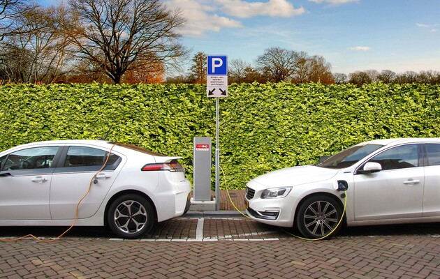

Електромобілі не тільки сприяють зменшенню забруднення повітря, але й мають позитивний вплив на економіку країни. Заощадження на паливі та обслуговуванні електромобілів дозволяють власникам зберігати кошти, що можуть бути вкладені в інші сфери економіки.
Крім того, розвиток виробництва та інфраструктури для електромобілів створює нові робочі місця. Виробництво акумуляторів, зарядних станцій та компонентів для електротранспорту відкриває нові можливості для бізнесу та інвестицій.
Зменшення викидів парникових газів та забруднюючих речовин, які спричиняють зміну клімату та забруднення довкілля, є ще одним важливим аспектом. Використання електромобілів може значно знизити негативний вплив транспорту на навколишнє середовище, зробивши міста чистішими та здоровішими для проживання.
Електромобілі стають невід'ємною частиною сучасного екологічного транспорту, а їх впровадження в Україні може мати значний позитивний вплив на економіку та екологію країни.
